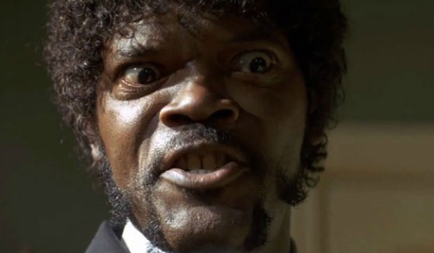

I can do that
Your bones don't break, mine do. That's clear. Your cells react to bacteria and viruses differently than mine. You don't get sick, I do. That's also clear. But for some reason, you and I react the exact same way to water. We swallow it too fast, we choke. We get some in our lungs, we drown. However unreal it may seem, we are connected, you and I. We're on the same curve, just on opposite ends.
Is she dead, yes or no?
Normally, both your asses would be dead as fucking fried chicken, but you happen to pull this shit while I'm in a transitional period so I don't wanna kill you, I wanna help you. But I can't give you this case, it don't belong to me. Besides, I've already been through too much shit this morning over this case to hand it over to your dumb ass.
I'm serious as a heart attack
The path of the righteous man is beset on all sides by the iniquities of the selfish and the tyranny of evil men. Blessed is he who, in the name of charity and good will, shepherds the weak through the valley of darkness, for he is truly his brother's keeper and the finder of lost children. And I will strike down upon thee with great vengeance and furious anger those who would attempt to poison and destroy My brothers. And you will know My name is the Lord when I lay My vengeance upon thee.
I'm serious as a heart attack
Normally, both your asses would be dead as fucking fried chicken, but you happen to pull this shit while I'm in a transitional period so I don't wanna kill you, I wanna help you. But I can't give you this case, it don't belong to me. Besides, I've already been through too much shit this morning over this case to hand it over to your dumb ass.
Are you ready for the truth?
Well, the way they make shows is, they make one show. That show's called a pilot. Then they show that show to the people who make shows, and on the strength of that one show they decide if they're going to make more shows. Some pilots get picked and become television programs. Some don't, become nothing. She starred in one of the ones that became nothing.
Uuummmm, this is a tasty burger!
Now that we know who you are, I know who I am. I'm not a mistake! It all makes sense! In a comic, you know how you can tell who the arch-villain's going to be? He's the exact opposite of the hero. And most times they're friends, like you and me! I should've known way back when... You know why, David? Because of the kids. They called me Mr Glass.
I can do that
The path of the righteous man is beset on all sides by the iniquities of the selfish and the tyranny of evil men. Blessed is he who, in the name of charity and good will, shepherds the weak through the valley of darkness, for he is truly his brother's keeper and the finder of lost children. And I will strike down upon thee with great vengeance and furious anger those who would attempt to poison and destroy My brothers. And you will know My name is the Lord when I lay My vengeance upon thee.
Is she dead, yes or no?
The path of the righteous man is beset on all sides by the iniquities of the selfish and the tyranny of evil men. Blessed is he who, in the name of charity and good will, shepherds the weak through the valley of darkness, for he is truly his brother's keeper and the finder of lost children. And I will strike down upon thee with great vengeance and furious anger those who would attempt to poison and destroy My brothers. And you will know My name is the Lord when I lay My vengeance upon thee.
